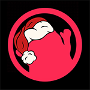

С наступающим 2019 годом!
На этой странице подготовлен новогодний виджет и скин для вашего стрима.
Получить их можно совершенно бесплатно, просто скопировав ссылку или загрузив скин.

Падающий снег
Виджет с классным падающим снегом придаст новогоднее настроение вашей трансляции. Вы сами можете выбрать желаемую скорость падения снега на свой вкус.
Новогодний скин для чата TopStream
Специальный новогодний скин для чата TopStream ! Скачайте скин и поместите его в папку с чатом, там где находится "TopStream.exe", затем выберите скин "Пользовательский".
Скачать новогодний скин
Вручить новогодний подарочек разработчикам чата и снега
Если вам понравился чатик TopStream, снежок к нему или новогодний скин, будем рады вашей новогодней поддержке. :)
Поздравить с новым годом
TopStream © 2018 - 2019
Чатик